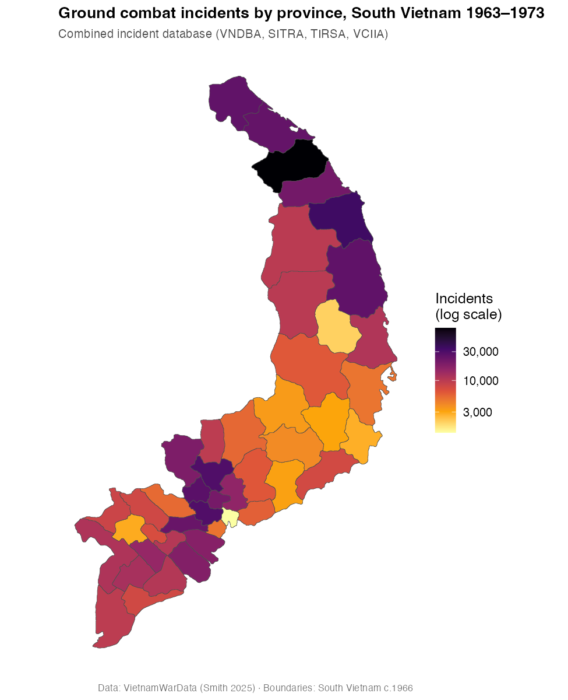

This article is a short, end-to-end walkthrough of the most common
task in VietnamWarData: pull a dataset, attach province
boundaries, and map it. The goal is to show the
workflow — especially how the pieces join together —
not to produce a publication-quality figure. (For the polished analyses,
see Smith 2025.)
The code chunks below are not executed when the site is built,
because get_comb_inc_dta() downloads a ~14 MB file from
GitHub. Everything here runs as written on your own machine; the map at
the end is a pre-rendered copy of the output.
2. Get the province boundaries
get_province_boundaries() returns an sf
polygon layer of the 45 provinces of South Vietnam as configured in
1966, together with their corps tactical zone. It ships with the
package, so there is no download — and, importantly, its
prov_name column uses the same province
names as the data files.
provinces <- get_province_boundaries()
provinces
#> Simple feature collection with 45 features and 2 fields
#> Geometry type: MULTIPOLYGON ... CRS: WGS 84
#> prov_name corp geometry
#> 1 An Giang IV Corp MULTIPOLYGON (((105.0 10.5...
#> ...3. Get the combined incident database
get_comb_inc_dta() returns the master incident-level
table that joins VNDBA, SITRA, TIRSA, and VCIIA — 638,760 rows covering
ground combat in South Vietnam, 1963–1973. The first call downloads and
caches the file; later calls read from the cache.
comb <- get_comb_inc_dta()
nrow(comb)
#> [1] 6387604. Aggregate, then join on prov_name
Count incidents per province with dplyr::count(), then
left_join() onto the boundary layer. Because both objects
key on prov_name, the join is exact — all 45 provinces
match, with no leftovers on either side.
(st_drop_geometry() turns the counting step into a plain
data-frame operation; the geometry comes back through the join.)
counts <- comb |>
mutate(prov_name = str_squish(prov_name)) |>
count(prov_name, name = "incidents")
map_df <- provinces |>
left_join(counts, by = "prov_name")
# sanity check: every province matched
map_df |>
st_drop_geometry() |>
summarise(unmatched = sum(is.na(incidents)))
#> unmatched
#> 1 0This prov_name key is the same across the other
province-coded datasets (SEAFA, the HES files, PSYOPS), so the same
recipe maps any of them.
5. Draw the choropleth
ggplot(map_df) +
geom_sf(aes(fill = incidents), color = "grey30", linewidth = 0.15) +
scale_fill_viridis_c(
option = "inferno", direction = -1, trans = "log10",
labels = scales::comma, name = "Incidents\n(log scale)"
) +
labs(
title = "Ground combat incidents by province, South Vietnam 1963–1973",
subtitle = "Combined incident database (VNDBA, SITRA, TIRSA, VCIIA)"
) +
theme_minimal()The result (pre-rendered):

Where to go next
- Swap
get_comb_inc_dta()for any otherget_*()function to map a different source file. - Summarize a different column —
e.g.
group_by(prov_name) |> summarise(kia = sum(n_enemy_kia, na.rm = TRUE))instead ofcount(). - Use the
corpcolumn fromget_province_boundaries()to summarize by corps tactical zone instead of province.
See the reference index for the full list of datasets, and Smith (2025) for the data construction and the substantive analyses.